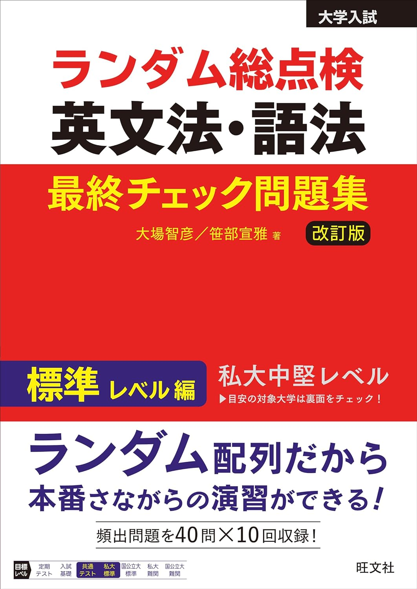

← ポータルに戻る
ランダム総点検 英文法・語法 最終チェック問題集 標準レベル編
全214ページ

本文
p.1–55
▶
1
Test 01
p.6
2
Test 02
p.10
3
Test 03
p.14
4
Test 04
p.18
5
Test 05
p.22
6
Test 06
p.26
7
Test 07
p.30
8
Test 08
p.34
9
Test 09
p.38
10
Test 10
p.42
11
Test 01 解答用紙
p.46
12
Test 02 解答用紙
p.47
13
Test 03 解答用紙
p.48
14
Test 04 解答用紙
p.49
15
Test 05 解答用紙
p.50
16
Test 06 解答用紙
p.51
17
Test 07 解答用紙
p.52
18
Test 08 解答用紙
p.53
19
Test 09 解答用紙
p.54
20
Test 10 解答用紙
p.55
解答・解説編
p.56–214
▶
1
Test 01 解答一覧
p.61
2
Test 01 解答・解説
p.62
3
Test 02 解答一覧
p.74
4
Test 02 解答・解説
p.75
5
Test 03 解答一覧
p.89
6
Test 03 解答・解説
p.90
7
Test 04 解答一覧
p.102
8
Test 04 解答・解説
p.103
9
Test 05 解答一覧
p.117
10
Test 05 解答・解説
p.118
11
Test 06 解答一覧
p.131
12
Test 06 解答・解説
p.132
13
Test 07 解答一覧
p.146
14
Test 07 解答・解説
p.147
15
Test 08 解答一覧
p.161
16
Test 08 解答・解説
p.162
17
Test 09 解答一覧
p.175
18
Test 09 解答・解説
p.176
19
Test 10 解答一覧
p.190
20
Test 10 解答・解説
p.191
21
理解をさらに深める！
p.205